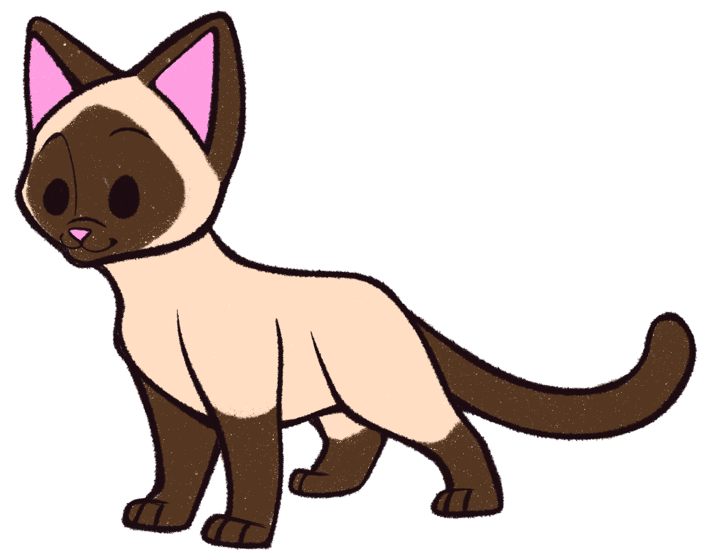
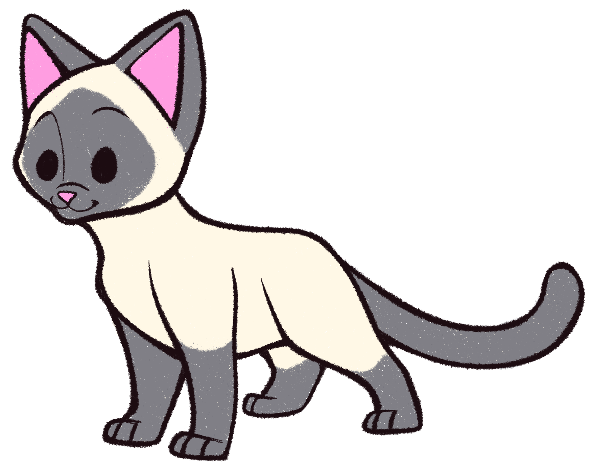
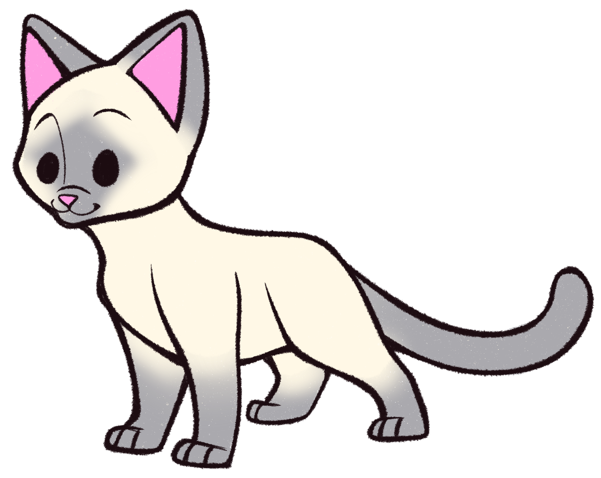
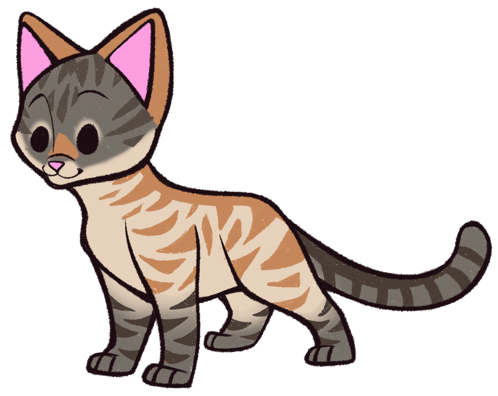
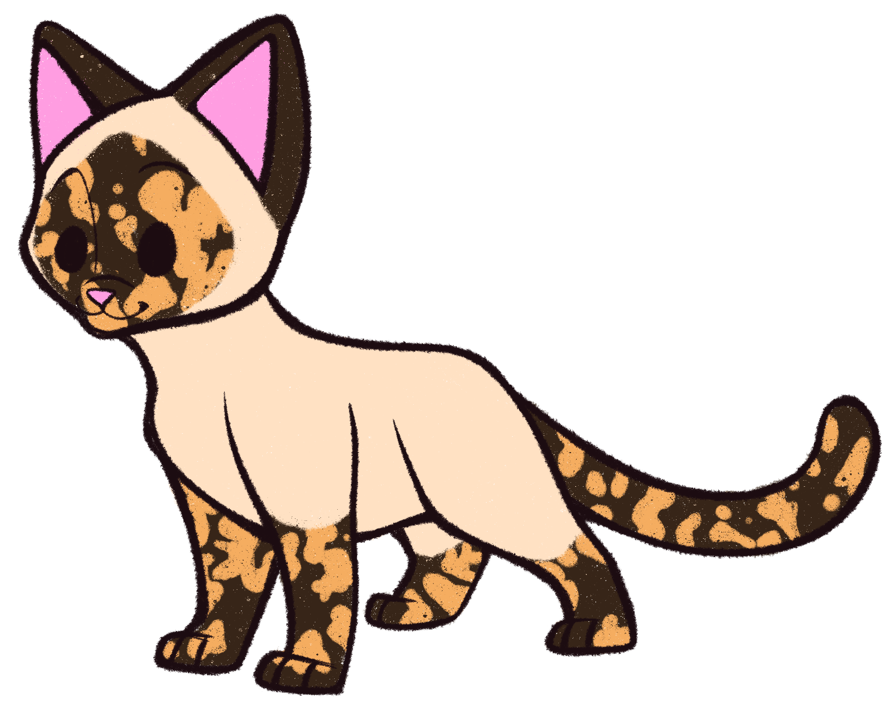

Siamese Cats, If You Please
Originally a pet of Thailand royalty, the Siamese is now very popular today - regardless of social status. They are coveted for their affectionate nature, intelligence, and incessant need to chat. Not many cat breeds are as recognizable as a Siamese, and this is due to their very specific body type and coat pattern!
Physiology

This cat is long and lithe, with a very graceful appearance. All Siamese have bright blue eyes that are large and almond shaped. The ears are fairly large and placed on a wedge or apple shaped head, and the tail is very long and thin. Arguably, the most identifiable aspect of the Siamese is their two-toned coat.
Coat Types
The distinctive coat pattern is usually refered to as colorpoint. This pattern is the result of a mutation in melanin production, making the relating enzyme heat sensitive. In other words, the warmest parts of the cat's body are a light color, while the cooler extremeties such as ears, face, legs, and tail are darker.
While all Siamese have colorpoint coats, the actual colors do vary. There are seven coat colors, but only four of them are officially recognized as "Breed Standard." The other three patterns exist due to another cat breed being introduced into the gene pool, therefore not purely Siamese. However, outside of show situations, all coats are considered Siamese regardless.
- Breed Standard Colors
- Seal Point
Most recognizable color pattern, with warm tan body and deep brown extremeties.

- Chocolate Point
Very similar to seal point, differences being a lighter cream body and richer, chocolate brown extremeties.

- Blue Point
"Blue" is a common term for the cool grey tones of the extremeties, with an exceptionally pale body.

- Lilac Point
Similar to blue point, with a pale body and even lighter grey dusted over the extremeties.

- Other Colors
- Flame Point
Also known as "Orange Point." The body is a warm cream, and the extremeties are orange with stripes. This color was created by introducing a tabby cat into the breeding pool. Flame Points are also almost always male! The gene that produces orange coloring is on the X chromosome. Females need two copies of the gene to appear orange, while males only need one!

- Lynx Point
Also known as "Tabby Point." The body is warm tan, and can sometimes be covered in liver-colored stripes. The extremeties are a dusty grey with dark brown to black stripes. Similar to the flame point, these markings are thanks to tabby genes being introduced to the breeding pool.

- Tortie Point
Also known as "Extremely Rare." The body is anywhere from tan to cream, and the extremeties are mottled orange and brown or blue. This coat can only be achieved when an orange cat breeds with a purebred siamese cat that has one of the Standard Breed color coats. Not only that, but the resulting kitten must be female. As mentioned earlier, female cats need two copies of the orange gene to fully exhibit an orange coat. Tortie points are the result of one X chromosome carrying the orange gene, and the other X not. Technically, male tortie points do exist, but are even more rare. This is because they have two X chromosomes and one Y!

Website by Erin Chacon, their lynx point Mona, and their very nosey bobtail Merlin (He is on their lap as they type this).